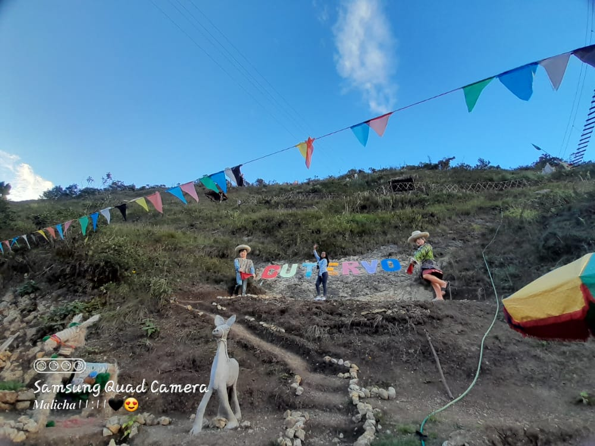
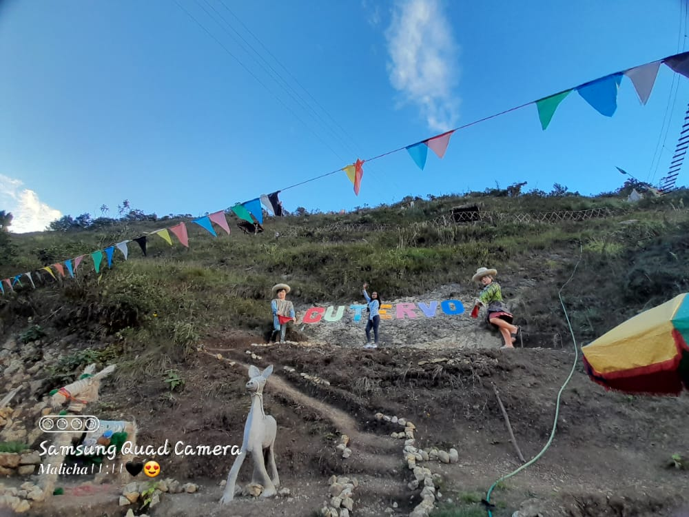

Leydi Yulisa Tello Cubas nacion en la comunidad
de Union Bellavista de Camse distrito y provincia de Cutervo region cajamarca
el 11 de noviembre del año del 2022 hija del señor Juan Tello Oblitas y de la señora
Melina Cubas Flores, tiene dos hermanas, sus estudios iniciales los realizo en la misma comunidad
a los 5 años inicio sus estudios primarios en la escuela primaria 18007 de la misma comunidad

 

en el año 2014 empezo sus estudios secunadarios en la instituto educativa del colegio "Elias Aguirre"
del caserio de Santa Clara y en el año 2018 termino sus estudios secunadarios , en el año 2019 postulo
al intituto de educacion superior Octavio Mata Contreras, postulando a la especiales de idiomas,
no alcanzando su meta, en el año 2020 postulo al instituto de educacion superior tecnologico publico cutervo
a la especialidad de Computacion e Informatica.
Logrando alcanzar una vacante y ahora se ecuentra cursando en
el quinto ciclo de dicha especialidad
Mi familia esta conformada por 5 integrantes, mi persona, mis dos
hermanas y mis padres a quien aprecio mucho...............................